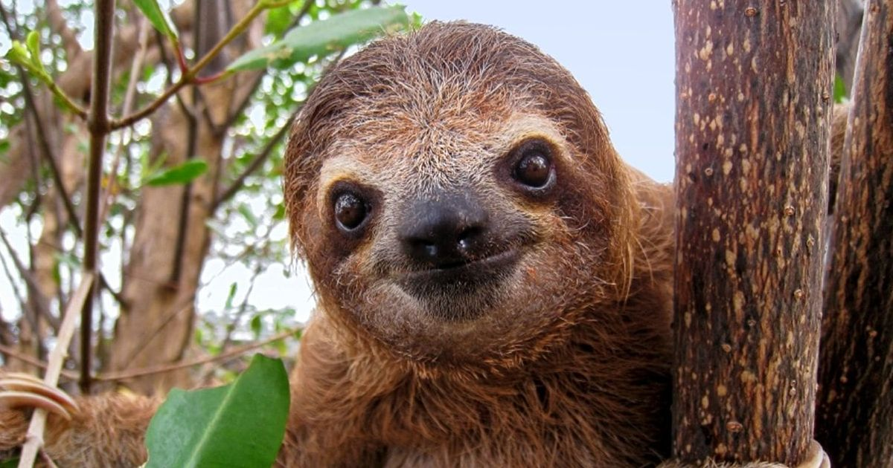
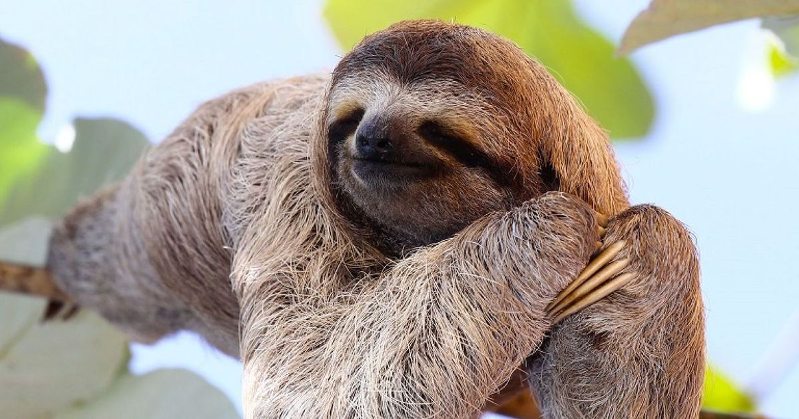
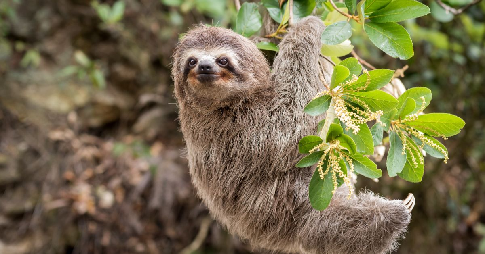
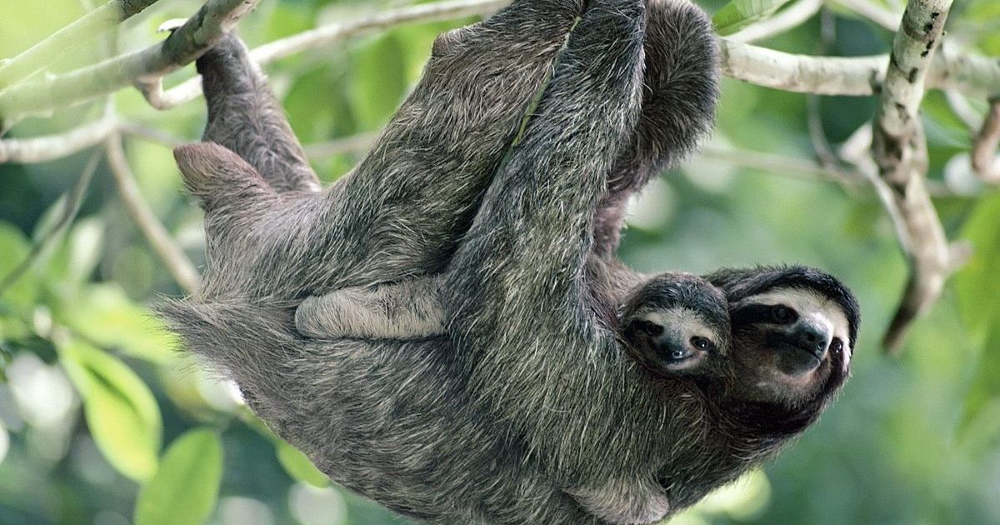

les paresseux





Qui sont-ils?
Les paresseux sont des mammifères arboricoles d'Amérique du Sud et d'Amérique centrale qui constituent le sous-ordre des Folivora1. Ce sont des animaux de taille moyenne au mode de vie original : ils sont presque toujours suspendus à l'envers dans les arbres et se déplacent avec lenteur. Ils possèdent de longues griffes. Les paresseux de la famille des Bradypus sont aussi appelés « aïs », chacun de leurs membres se terminant par trois doigts griffus, ce qui les distingue des Choloepus, de la famille des Megalonychidae, qui ne présentent que deux griffes à chaque main. Outre les six espèces vivant actuellement, on connaît quatre espèces éteintes de paresseux géants qui vivaient en Amérique. Les fossiles de trois d'entre elles ont été trouvés dans l'asphalte des puits de goudron de Rancho La Brea2 qui abrite des fossiles récents de la dernière ère glaciaire (−40 000 à −10 000 ans). Il ne faut pas les confondre avec le « paresseux australien », un autre nom donné au koala, mammifère marsupial.
Biologie
Ils possèdent 18 dents à croissance continue (en général 10 en haut et 8 en bas6) au total (canines et prémolaires6) qui leur servent à mâcher des feuilles. Leur métabolisme, deux fois inférieur à celui des autres mammifères, leur procure une température qui varie de 23 à 32 °C au cours de la journée, impliquant une poïkilothermie au moins partielle7. La couleur du pelage, verdâtre, est due à la présence de symbiotes chlorophylliens8, des cyanobactéries (Cyanoderma bradypii9 ou Cyanoderma choloepi) et des algues vertes (Trichophilus welckeri10). Le paresseux possède quelques prédateurs, principalement le jaguar, l'ocelot et l'aigle harpie (Harpia harpyja). Ainsi, chez le Bradypus variegatus, le sol est, et de loin, le lieu de sa plus grande vulnérabilité, cette espèce ne descend pour faire ses besoins qu'une fois par semaine, et se libère alors de plus d'un tiers de son poids. Ce mode de vie assez remarquable est dû aux feuilles coriaces que le Bradypus variegatus mange, qui entraînent une digestion particulièrement lente11. Il se déplace très lentement : moins de 10 m à la minute dans les arbres (soit 0,6 km/h)12. En fait, cette lenteur est son meilleur camouflage ; il échappe ainsi à la vue perçante de ses prédateurs. Certaines études ont montré qu'il dort environ 12 heures par jour13. Le paresseux est incapable de sauter et ne voit pas très loin14. Autre caractéristique intéressante, le cou du paresseux comporte huit à neuf vertèbres cervicales ce qui lui permet d'effectuer des rotations de la tête sur près de 270 degrés. Le paresseux a une espérance de vie d'environ 30 à 50 ans15. Le paresseux (Bradypus, aï en français) est solitaire, il ne s'accouple que tous les deux ans environ. La femelle donne naissance à un seul petit au bout d'une gestation d'environ 6 mois ; le petit pèse alors 200-250 g. Au bout de 6 mois, la mère le délaisse, mais le petit la suit encore jusqu'à l'âge d'un an pour s'en séparer définitivement ensuite16. On les rencontre très fréquemment dans tout le Costa Rica, jusqu'à une altitude de 2 400 m16. En Guyane, l'aï est le réservoir principal du protozoaire Leishmania braziliensis guyanensis, responsable de leishmanioses cutanées du type espundia (la transmission s'effectue par un phlébotome (Lutzomyia umbratilis)17.
Mythe
Le paresseux fait partie des mythes fondateurs dans certaines populations d'Amérique du Sud, soit ancêtre de l'espèce humaine, soit transformation de l'homme en ces animaux des suites d'une mauvaise action. Ce mythe a été étudié par l'anthropologue français Claude Lévi-Strauss dans son ouvrage La Potière jalouse en 1985. Dans la littérature, il est évoqué par l'écrivain chilien Luis Sepúlveda dans son roman Le Vieux qui lisait des romans d'amour en 1992.
Conservation de l'espèce
Actuellement, la principale menace pour le paresseux est l'activité humaine, car celui-ci en fait commerce18. L'impact néfaste de l'être humain sur l'espèce est d'autant plus important avec l'accélération de la déforestation, qui oblige le paresseux à se déplacer au sol vers d'autres zones habitables et l'expose aux prédateurs18. Le paresseux de la famille des Bradypodidae est très recherché comme animal de compagnie. Cependant son métabolisme lent adapté au mode de vie dans la forêt se montre très vulnérable à certaines maladies qui provoquent une surmortalité des paresseux en captivité18. Le paresseux de la famille des Megalonychidae n'est, quant à lui, pas valorisé en tant qu'animal de compagnie en raison de son tempérament agressif et de ses dents pointues18.